전자산업기사 (2017-09-23 기출문제)
1과목: 전자회로
1. 하틀리 발진 회로에서 발진 주파수(f)는? (단, L1, L2는 코일 인덕턴스, M은 L1, L2의 상호인덕턴스, C는 커패시턴스이다.)
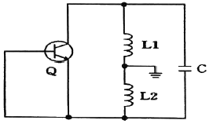
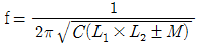
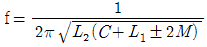
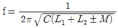
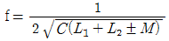
(정답률: 78%)

2. B급 푸시풀(push-pull) 증폭회로의 장점이 아닌 것은?
- 크로스 오버(Cross over) 왜곡이 발생하지 않는다.
- 공급전원의 리플 전압이 출력에 나타나지 않는다.
- 출력파형의 일그러짐이 작다.
- 출력 변압기의 철심이 자기 포화될 우려가 없다.
(정답률: 87%)
3. 부귀환(Negative feedback) 증폭기의 특징이 아닌 것은?
- 잡음이 감소된다.
- 대역폭이 감소된다.
- 주파수 특성이 개선된다.
- 비직선 왜곡이 감소된다.
(정답률: 86%)
4. 베이스 접지 증폭회로에서 차단주파수가 30MHz인 트랜지스터(TR)를 이미터 접지로 했을 경우 차단주파수는 몇 MHz인가? (단, TR의 전류 증폭률(β)은 99이다.)
- 0.1
- 0.3
- 10
- 30
(정답률: 67%)
5. JFET가 동작하기 위한 조건으로 옳은 것은?
- 역방향 바이어스된 게이트-소스 접합
- 순방향 바이어스된 게이트-소스 접합
- 역방향 바이어스된 게이트-드레인 접합
- 순방향 바이어스된 게이트-드레인 접합
(정답률: 65%)
6. 다음 중 진폭변조(AM) 회로는?
- Balanced Modulator 회로
- Foster-seeley 회로
- Armstrong 회로
- Reactance관 회로
(정답률: 75%)
7. 정전압 전원회로에서 무부하 시의 직류전압이 15V이고 부하 시의 직류전압이 12V일 때 전압변동률(%)은?
- 15
- 20
- 25
- 30
(정답률: 73%)
8. NE555 타이머의 출력주파수는 얼마인가?(단, R1=1kΩ, R2=4.7kΩ, C=0.022μF 이다.)
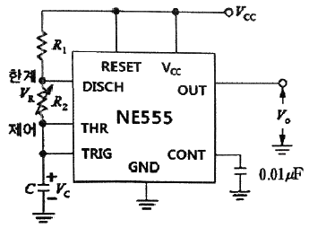
- 4.3kHz
- 5.3kHz
- 5.6kHz
- 6.3kHz
(정답률: 53%)
9. 연산증폭기의 응용회로에서 출력전압은 몇 V인가? (단, R1=R2=R3=R4=50kΩ, Rf=25kΩ이다.)
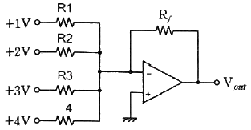
- +0.5
- -5
- +5
- -10
(정답률: 76%)
10. 다음 회로는 어떤 목적에 이용될 수 있는가?
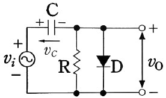
- 클램핑(Clamping)
- 클리핑(Clipping)
- 정류(Rectification)
- 변조(Modulation)
(정답률: 88%)
11. 다음 회로의 명칭은?
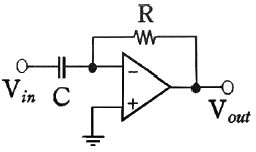
- 적분기
- 비교기
- 가산기
- 미분기
(정답률: 89%)
12. 변조도가 40%인 진폭 변조 송신기에서 반송파의 평균전력이 500mW일 때 변조된 출력의 평균전력은 몇 mW인가?
- 450
- 500
- 540
- 650
(정답률: 78%)
13. 다음 연산 회로의 출력 값으로 옳은 것은?
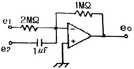
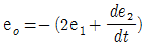
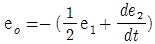
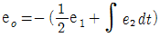
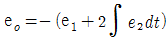
(정답률: 78%)
14. 다음 회로의 입력에 정현파를 인가했을 때 출력파형으로 옳은 것은?
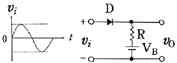
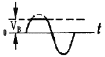
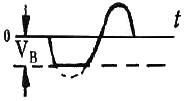
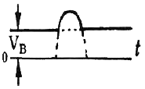
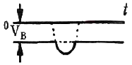
(정답률: 74%)
15. 연산증폭기를 이용한 전압 폴로우(voltage follower) 회로에 관한 설명으로 틀린 것은?
- 입력과 출력은 동위상이다.
- 입력과 출력 전압크기는 서로 같다.
- 입력저항은 크고, 출력저항은 작다.
- 입력저항은 작고, 출력저항은 크다.
(정답률: 66%)
16. 슈퍼헤테로다인 수신기에서 중간 주파수(IF)에 관한 설명 중 옳은 것은?
- 국부 발진 주파수와 RF 반송파 주파수의 곱이다.
- 국부 발진 주파수와 같다.
- 반송파 주파수와 오디오 주파수의 합이다.
- 국부 발진 주파수와 RF 반송파 주파수의 차이다.
(정답률: 66%)
17. 다음 부귀환 증폭회로의 명칭은?
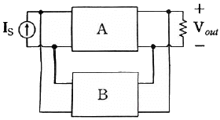
- 전류 병렬 부귀환 회로
- 전류 직렬 부귀환 회로
- 전압 병렬 부귀환 회로
- 전압 직렬 부귀환 회로
(정답률: 70%)
18. 트랜지스터의 잡음에 관한 설명으로 틀린 것은?
- 저주파에서는 주파수에 반비례한다.
- 중간 주파수에서는 대체로 일정하다.
- 고주파수에서는 주파수에 따라 증대한다.
- 신호원 내부저항의 영향을 받지 않는다.
(정답률: 80%)
19. 구형파를 발생시키는 회로가 아닌 것은? (단, 입력파형으로는 구형파를 인가하지 않았을 경우로 가정한다.)
- 클램핑 회로
- 타이머 555 회로
- 슈미트 트리거 회로
- 비안정 멀티바이브레이터
(정답률: 68%)
20. 회로의 입출력 전달특성(
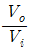
)으로 옳은 것은?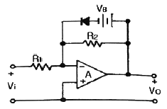
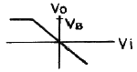
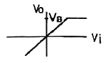
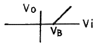
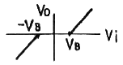
(정답률: 78%)
2과목: 전기자기학 및 회로이론
21. 전극분극에 대한 설명으로 옳은 것은?
- 도체 내의 원자핵의 변위이다.
- 유전체 내의 원자의 흐름이다.
- 도체 내의 자유전하의 흐름이다.
- 유전체 내의 속박전하의 변위이다.
(정답률: 62%)
22. 진공 중에서 8π(Wb)의 자하(磁荷)로부터 발산되는 총자력선의 수는?
- 107개
- 2×107개
- 107/8π개
- 8π×107개
(정답률: 65%)
23. 내구의 반지름 a=3cm, 외구의 반지름 b=5cm인 동신구 콘덴서의 외구를 접지하고 내구에 V=1500V의 전위를 가할 경우에 내구에 충전되는 전하량은 약 몇 C인가?
- 1.25×10-8
- 1.5×10-8
- 2.5×10-8
- 3.6×10-8
(정답률: 66%)
24. 두 개의 긴 평행 도선에 전류가 동일 방향으로 흐를 때 단위 길이당 두 도선 사이에 작용하는 전자력에 대한 설명이다. 옳은 것은?
- 두 전류의 곱에 비례하고 도선간의 거리의 제곱에 반비례하는 반발력이 작용한다.
- 두 전류의 곱에 비례하고 도선간의 거리의 제곱에 반비례하는 흡입력이 작용한다.
- 두 전류의 곱에 비례하고 도선간의 거리에 반비례하는 반발력이 작용한다.
- 두 전류의 곱에 비례하고 도선간의 거리에 반비례하는 흡입력이 작용한다.
(정답률: 56%)
25. 전자유도에 의해서 회로에 발생하는 기전력에 관련된 법칙은?
- 옴의 법칙
- 가우스 법칙
- 암페어 법칙
- 패러데이 법칙
(정답률: 78%)
26. 감자력과 관계로 옳게 나타낸 것은?
- 자속(Φ)에 반비례한다.
- 자계의 세기(H)에 반비례한다.
- 자극의 세기에 반비례한다.
- 자화의 세기(J)에 비례한다.
(정답률: 76%)
27. 면적이 S(m2), 극판간격이 d(m), 유전율이 ε(F/m)인 평행판 콘덴서에 V(V)의 전압이 가해졌을 때 축적되는 전하는?
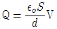
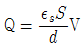
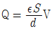
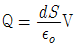
(정답률: 66%)
28. 환상솔레노이드의 자기 인덕턴스에서 코일권수를 5배로 하였다면 자기 인덕턴스의 값은?
- 변함이 없다.
- 5배 증가한다.
- 10배 증가한다.
- 25배 증가한다.
(정답률: 68%)
29. 다음 설명 중 틀린 것은?
- 금속 도체 내에서 자유전자가 전계의 방향과 같은 방향으로 이동하여 전류가 된다.
- 저항의 역수를 컨덕턴스라 하면 단위로는 지멘스(S)를 이용한다.
- 전류의 세기는 단위 시간당 이동했던 전하량으로 나타난다.
- 전기 전도도가 무한대가 되는 현상을 초전도라 한다.
(정답률: 63%)
30. 평등자계 내에 수직으로 돌입한 전자의 궤적은?
- 원운동을 하고 반지름은 자계의 세기에 비례한다.
- 원운동을 하고 반지름은 자계의 세기에 반비례한다.
- 원운동을 하고 반지름은 전자의 처음 속도에 반비례한다.
- 구면위에서 회전하고 반지름은 자계의 세기에 비례한다.
(정답률: 62%)
31. 단위 길이당 임피던스 및 어드미턴스가 각각 Z, Y인 전송회로에서 반복 전달정수의 값은?
- ZY
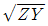
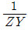
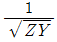
(정답률: 72%)
32. 그림과 같은 회로의 구동점 임피던스는?
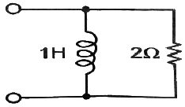
- 2+jw
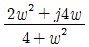
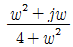
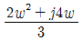
(정답률: 65%)
33. 다음과 같은 파형을 라플라스 변환을 하면?
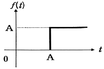
- AeAs
- Ae-As
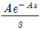
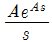
(정답률: 81%)
34. 4단자 회로망에서 출력단자를 단락할 때 역방향 전류이득을 나타내는 파라미터는?
- A
- B
- C
- D
(정답률: 73%)
35. 다음 회로의 전압표시는 그 커패시터가 견딜 수 있는 최대 전압을 나타낸다. 단자 A, B 사이에 걸어줄 수 있는 최대 허용전압은 약 몇 V인가?
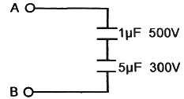
- 300
- 500
- 600
- 800
(정답률: 55%)
36. 단위 길이의 인덕턴스 L[H], 정전용량 C[F] 선로의 진행파의 전파 속도는?
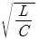
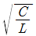
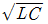
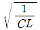
(정답률: 51%)
37. 다음 중 공진 상태에 관한 설명 중 틀린 것은?
- 직렬공진회로에서는 전압이 최대가 된다.
- 전압과 전류가 동상이 될 때이다.
- 역률이 1이 되는 상태이다.
- 공진이 되었을 때 최대전력이 전달된다.
(정답률: 46%)
38. 시정수(τ)를 갖는 R-L 직렬회로에 직류전압 인가시 t=2τ인 시간에 회로에 흐르는 전류는 정상상태 전류의 몇 %인가?
- 58.6
- 74.8
- 86.0
- 92.4
(정답률: 66%)
39. 정현대칭(원점대칭)의 비 정현파의 푸리에 급수에서 옳게 표현된 것은? (단,
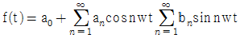
)- ao=0 이고, an, bn 만 남는다.
- ao=0, an=0이고, bn 만 남는다.
- an=0, bn=0이고, a0 만 남는다.
- a0=0, bn=0이고, an 만 남는다.
(정답률: 57%)
40. 순시값이 i=Im sin(wt-θ) 인 정현파 전류의 실효값은?
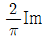
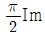
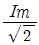
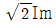
(정답률: 74%)
3과목: 전자계산기일반
41. RISC 컴퓨터에 대한 설명으로 가장 옳지 않은 것은?
- 비교적 느린 메모리와 빠른 클록
- 고정된 길이의 명령어 제공
- 하드와이어드 방식의 프로세서와 소프트웨어로 구성
- 한 사이클에 명령을 수행하도록 구성
(정답률: 74%)
42. 스태틱(static) RAM에 비해 다이나믹(dynamic) RAM의 특징이 아닌 것은?
- 전력 소모가 적다.
- 재충전이 필요하다.
- 동작 속도가 빠르다.
- 단위 면적당 기억용량이 크다.
(정답률: 67%)
43. 3-cycle 인스트럭션에 속하지 않는 것은?
- ADD
- JUMP
- LOAD
- STORE
(정답률: 63%)
44. 정보의 내부표현에서 수치정보를 표현하는데 만족시켜야 할 사항이 아닌 것은?
- 10진수와 상호변환이 용이해야 한다.
- 데이터처리 및 CPU 내에서 이동이 용이해야 한다.
- 기억장치의 기억공간을 많이 차지해야 한다.
- 한정된 수의 비트로 나타내므로 정밀도가 높아야 한다.
(정답률: 84%)
45. 다음 중 자기 보수 코드(self complement code)는?
- Gray code
- Excess-3 code
- 6-3-1-1 code
- 8-4-2-1 code
(정답률: 66%)
46. 현재 수행중에 있는 명령어 코드를 저장하고 있는 레지스터는?
- MAR
- MBR
- 인덱스 레지스터
- 인스트럭션 레지스터
(정답률: 52%)
47. 한 명령의 execute cycle 중에 인터럽트 요청이 있어 인터럽트를 처리한 다음에 수행하는 cycle은?
- fetch cycle
- indirect cycle
- direct cycle
- execute cycle
(정답률: 76%)
48. 누산기나 레지스터에 있는 내용을 지정된 메모리 주소로 옮기는 명령은?
- Transfer 명령
- Load 명령
- Store 명령
- Fetch 명령
(정답률: 73%)
49. 어떠한 명령(instruction)이 수행되기 위해서 가정 먼저 이루어져야 하는 마이크로 오퍼레이션은?
- MAR ← PC
- PC ← PC+1
- MBR ← PC
- IR ← MBR
(정답률: 87%)
50. 다음 중 오퍼랜드(Operand) 부에 실제 데이터가 들어있는 주소지정방식은?
- Implied Addressing Mode
- Relative Addressing Mode
- Immediate Addressing Mode
- Indexed Addressing Mode
(정답률: 79%)
51. C 언어의 특징과 가장 거리가 먼 것은?
- 간략한 표현
- 높은 이식성
- 범용 프로그래밍 언어
- 프로그램의 유연성으로 인한 프로그래머의 작업 증가
(정답률: 79%)
52. 8진수 372를 16진수로 표현한 것은?
- FA
- FB
- F10
- 1F2
(정답률: 74%)
53. 캐시 액세스시간 Tc=50ns이고, 주기억장치 액세스시간 Tm=400ns인 시스템에서 적중률이 70%일 때의 평균기억장치 액세스 시간은?
- 155ns
- 120ns
- 100ns
- 80ns
(정답률: 66%)
54. 다음 중 에러를 검출하고 교정까지 가능한 코드는?
- ASCII code
- hamming code
- gray code
- BCD code
(정답률: 89%)
55. 입출력 포트가 기억장치 주소 공간의 일부인 형태로 하나의 읽기/쓰기 신호만이 필요하며 기억장치의 주소와 입출력 장치의 주소의 구별이 없는 입출력 제어 방식은?
- Programmed I/O 방식
- DMA(Direct Memory Access) 방식
- I/O Mapped I/O 방식
- Memory Mapped I/O 방식
(정답률: 63%)
56. 원시프로그램(source program)을 컴파일(compile)하여 얻어지는 프로그램은?
- 실행 프로그램
- 시스템 프로그램
- 유틸리티 프로그램
- 목적 프로그램
(정답률: 82%)
57. 기억장치의 접근속도가 0.5μs이고, 데이터 워드가 32비트일 때의 대역폭은?
- 8M[bit/sec]
- 16M[bit/sec]
- 32M[bit/sec]
- 64M[bit/sec]
(정답률: 71%)
58. 기계어(machine language)에서 조건 분기(conditional jump)를 할 때 조건 판정의 기준이 되는 레지스터는?
- 프로그램 카운터(program counter)
- 인덱스 레지스터(index register)
- 스택 포인터(stack pointer)
- 상태 레지스터(status register)
(정답률: 55%)
59. 순서논리회로로서 자료의 일시기억장치로 사용되는 레지스터(Register)의 구성 요소는?
- 게이트들의 집합
- 플립플롭들의 집합
- 메모리들의 집합
- PLA들의 집합
(정답률: 78%)
60. 다음 중 인터럽트가 발생될 수 있는 요인이 아닌것은?
- 정전 또는 자료 전달 과정에서의 오류 발생
- 불법적인 인스트럭션의 수행
- 오퍼레이터에 의한 오동작
- 시스템 도입에 의한 유지보수
(정답률: 77%)
4과목: 전자계측
61. 편위법에 비하여 감도가 높고, 정밀한 측정을 요구하는 경우 사용하는 측정방법으로 가장 적합한 것은?
- 직편법
- 단상 전력계법
- 영위법
- 반경법
(정답률: 85%)
62. 프레밍의 왼손법칙을 이용하여 만든 계기는?
- 영구 자석 가동코일형 계기
- 영구 자석 정전형 계기
- 주파수계
- 디지털 멀티미터
(정답률: 83%)
63. 계수형 주파수계의 측정 시 주의사항 중 틀린것은?
- 입력 임피던스를 높게 하여 피측정 회로의 영향을 주지 않도록 할 것
- 기준 발진기의 확도를 높이기 위하여 표준 전파 등에 교정하여서 측정할 것
- ±카운터 오차를 방지하기 위하여 게이트 시간을 아주 짧게 하여 확도를 높일 것
- 감도 감쇠기는 감도가 낮은 곳에 놓고, 입력을 가한 후 차례로 감도를 높일 것
(정답률: 73%)
64. 계기용 변류기에 대한 설명 중 틀린 것은?
- 2차권선은 보통 2차측에 0.5A의 전류가 흐른다.
- 2차 코일의 한끝을 접지시킨다.
- 2차권선은 개방하지 않아야 한다.
- 1차권선과 2차권선을 가진다.
(정답률: 60%)
65. 고주파용 전력측정과 관계가 가장 먼 것은?
- 표준부하
- 볼로미터
- CM형 전력계
- TR형 전력계
(정답률: 52%)
66. 증폭기의 왜율 측정에 해당되지 않는 것은?
- 감쇠기법
- 공진 브리지(Bridge)법
- 필터법
- 왜율계법
(정답률: 62%)
67. 오실로스코프의 Time base를 500[ns/cm]로 했을 때의 1Hz당의 길이가 4cm였다. 피측정 주파수는 얼마인가?
- 200kHz
- 300kHz
- 400kHz
- 500kHz
(정답률: 50%)
68. 어느 회로망의 입력단자 및 출력단자의 전압을 각각 오실로스코프의 수직, 수평 단자에 인가해서 화면상의 그림과 같은 도형이 나타났다. 위상각(θ)을 나타낸 식으로 옳은 것은?
(정답률: 75%)
69. 다음 펄스 파형의 구간별 명칭 중 ㉤에 해당하는 것은?
- 오버슈트
- 링잉
- 펄스폭
- 새그
(정답률: 82%)
70. 브리지 회로로 측정할 수 없는 것은?
- 저항
- 인덕턴스
- 커패시턴스
- 고주파 주파수
(정답률: 79%)
71. 헤테로다인 주파수게에 단일 비트(single beat) 법보다 2중 비트(double beat) 법이 좋은 이유는?
- 구조가 간단하므로
- 취급이 용이하므로
- 고정용 발진기를 사용하므로
- 제로 비트 식별이 용이하므로
(정답률: 84%)
72. 브리지에서 평형 조건은?
- R1R2 = LC
(정답률: 64%)
73. 디지털 표시형 계기를 구성하는 논리소자 중 가장 속도가 빠른 소자는?
- CPU(Central Processing Unit)
- RTL(Registor Transistor Logic)
- TTL(Transistor Transistor Logic)
- ECL(Electro-Chemi Luminescence)
(정답률: 66%)
74. 오실로스코프로 측정이 어려운 것은?
- 교류 전압
- 코일의 Q
- 두 신호의 위상각
- 펄스의 지연시간
(정답률: 88%)
75. 다음 중 측정용 저주파 발진기로 주로 사용하지 않는 것은?
- 비트 발진기
- 음차 발진기
- RC 발진기
- 수정 발진기
(정답률: 64%)
76. 최대눈금 250V인 0.5급 전압계로 전압을 측정하였더니 지시가 100V였다면 상대오차는 몇 %인가?
- 1
- 1.25
- 2
- 2.25
(정답률: 80%)
77. 왜곡률을 측정하는 방법을 열거한 것 중 옳은 것은?
- 기본파와 고주파 전압의 적
- 기본파와 고주파 전류의 적
- 기본파와 고주파 전압의 비
- 기본파와 고주파 전류의 비
(정답률: 75%)
78. 다음 그림과 같은 회로의 명칭은? (단, RC1=RC2=1kΩ, RB1=RB2=27kΩ)
- 비안정 멀티바이브레이터
- 단안정 멀티바이브레이터
- 쌍안정 멀티바이브레이터
- Blocking 발진기
(정답률: 74%)
79. 브라운관 오실로스코프의 다음 파형은 무엇을 측정한 것인가?
- 20%의 AM 변조도
- 20%의 FM 변조도
- 40%의 AM 변조도
- 40%의 FM 변조도
(정답률: 80%)
80. 오실로스코프와 조합하여 FM 수신기의 주파수 변별기 등 각종 고주파 회로의 주파수 특성 및 대역 조정에 이용되는 발진기는?
- CR 발진기
- 음차 발진기
- 비트(beat) 발진기
- 소인(sweep) 발진기
(정답률: 81%)
f = 1 / (2π√(L1(L2-M)/C))
여기서 L1, L2, M, C는 각각 코일 인덕턴스, 커패시턴스, 상호인덕턴스, 커패시턴스를 나타낸다.
따라서, 보기 중에서 정답은 ""이다.